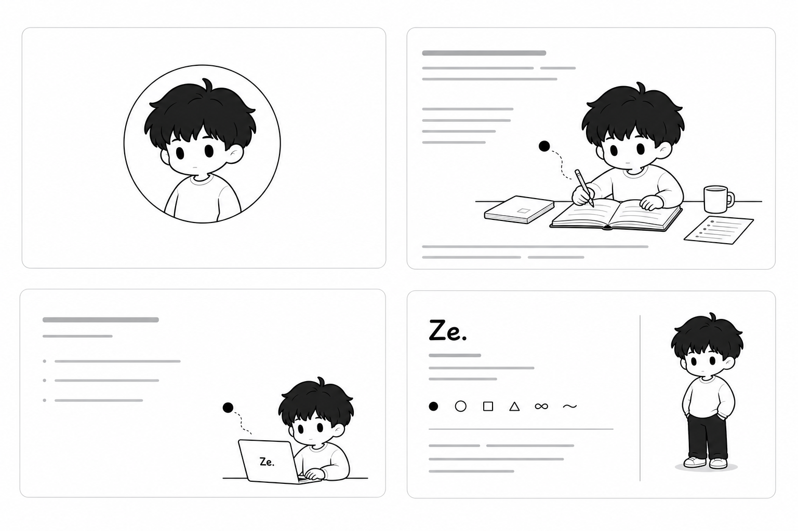

Final preview
Ze Web Design System.
最终视觉语言以白底、低饱和色、Dot 交互、Ze Rough Line、组件状态和内容驱动页面结构为核心。

Canvas
White first
整页背景回到 Ze Universe 的白底规则，颜色只作为局部层级和阅读辅助。
Motion
Quiet but real
Dot cursor、hover、reveal、tabs、accordion 和 loading 都可试，但不会变成炫技。
Lines
Drawn, not rigid
线条有轻微不均匀和手感，用来组织概念，而不是给所有区块画牢笼。
Assets
Reusable system
Approved anchors, references, components, and page rules now form a reusable Codex skill.
Preview
Three final boards.
这三个页面分别展示基础视觉语言、组件状态和页面结构，作为后续 HTML 生成的可视参考。
System
What the final system preserves.
最终包只保留可复用规则：白底、局部低饱和色、结构化页面类型、克制动效、抽象符号和 Ze Rough Line。